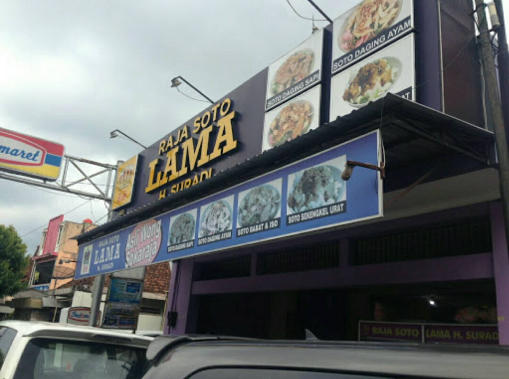
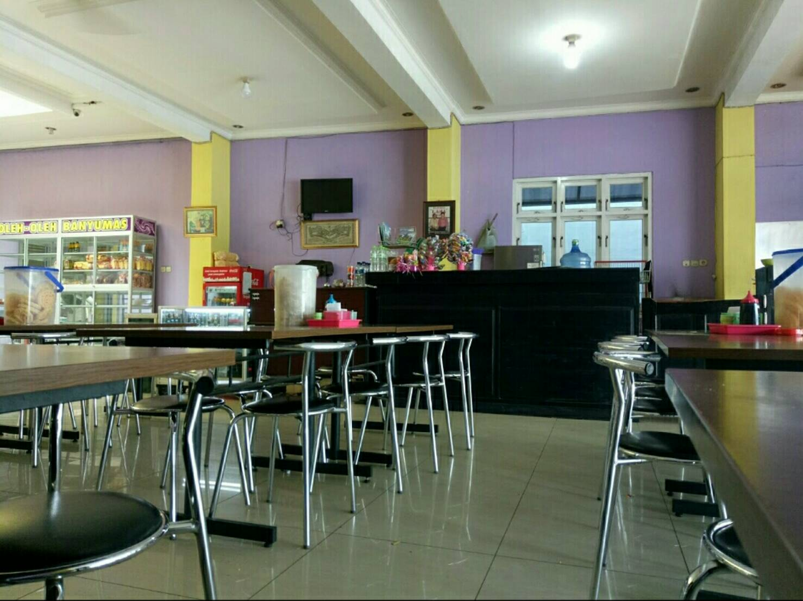

Ketupat siap pakai secukupnya ( potong-potong kecil )
Soun 150 gram ( rendam dengan air, tiriskan )
Tauge pendek 150 gram ( cuci bersih )
Kedelai goreng 150 gram
Jahe 3 centi meter ( memarkan )
Daun salam 3 lembar ( untuk merebus ayam )
Lengkuas 4 centi meter ( memarkan )
Air 2.500 mili liter ( untuk merebus ayam dan kaldu )
Minyak goreng secukupnya ( untuk menumis dan untuk menggoreng ayam )
Garam secukupnya ( bisa disesuaikan dengan selera )
Bumbu Halus Soto Sokaraja :
Bawang merah 8 butir
Bawang putih 4 siung
Serai 2 batang
Kunyit 2 centi meter ( bakar )
Kemiri 6 butir ( sangrai )
Seledri 2 batang
Bahan Pelengkap Soto Sokaraja :
Daun bawang ( iris tipis )
Irisan daun seledri
Bawang goreng
Kerupuk warna warni ( merah, putih, kuning )
Kecap manis secukupnya
Bahan Sambal Kacang Soto Sokaraja :
Kacang tanah 200 gram ( haluskan )
Bawang goreng 3 sendok makan
Cabai rawit 6 buah
Bawang putih 2 siung
Garam 1 sendok makan
Gula merah 2 sendok teh
Air asam 1 sendok makan
Cara Membuat Soto Sokaraja Asli Banyumas :
Langkah awal rebus ayam, air, daun salam, lengkuas, dan garam hingga matang. angkat, goreng ayam hingga kuning kecoklatan, tiriskan, lalu suwir-suwir.
Kuah Kaldu Bumbu : Selanjutnya panaskan minyak, lalu tumis bumbu halus hingga tercium aroma wangi sedap. masukkan ke dalam kaldu ayam bekas rebusan ayam, masak di atas api kecil hingga mendidih.
Sambal Kacang : haluskan bawang merah, bawang putih, kencur, cabai merah, dan garam. kemudian panaskan minyak, tumis bumbu halus sambal kacang hingga harum. tambahkan gula merah, air asam, dan kacang tanah yang sudah dihaluskan tadi, aduk hingga rata. angkat, tuang air, lalu aduk rata kembali.
Penyajian : tata irisan ketupat yang sudah dipotong-potong tadi, tata soun, tauge, ayam suwir, daun bawang, seledri dan kacang kedelai lalu tuang kuah soto. lengkapi dengan kerupuk kanji atau kerupuk warna-warni yang diremas-remas hingga remuk, lalu taburi bawang merah goreng dan sambal kacang.
Tempat Raja Soto Lama Sokaraja

Alamat: JL Jend. Sutoyo, No. 2, Kedungwuluh, Purwokerto Bar., Kabupaten Banyumas, Jawa Tengah 53131
Untuk informasi lain bisa hubungi di nomor telepon 68441190 Harga dan menu: